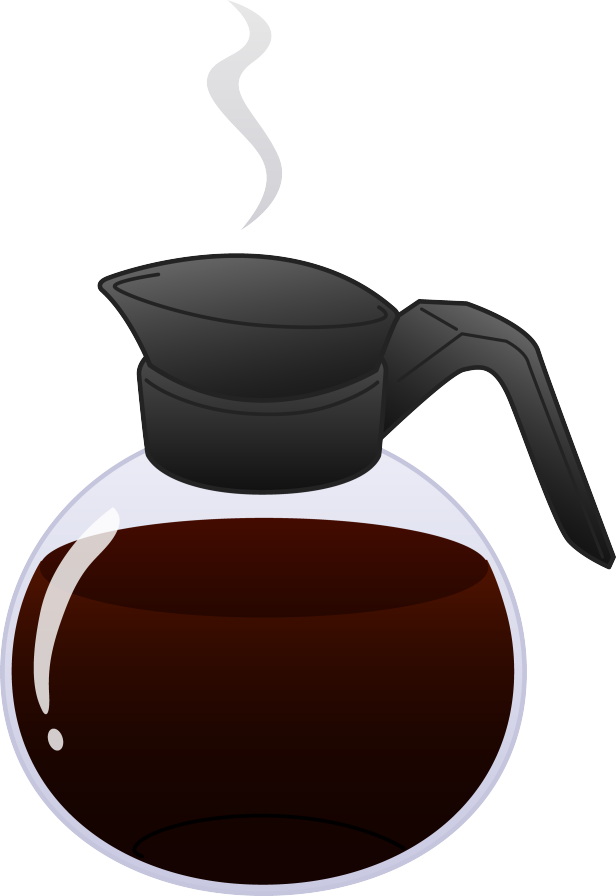

Teradici Coffee Status(1st floor)
Below is the wheight in grams of both dark and medium Teradici coffee pots. Future features include coffee temperature, freshness, real-time consumption and other usefull services.
Dark:
reloading
reloading
Medium:
reloading
reloading
